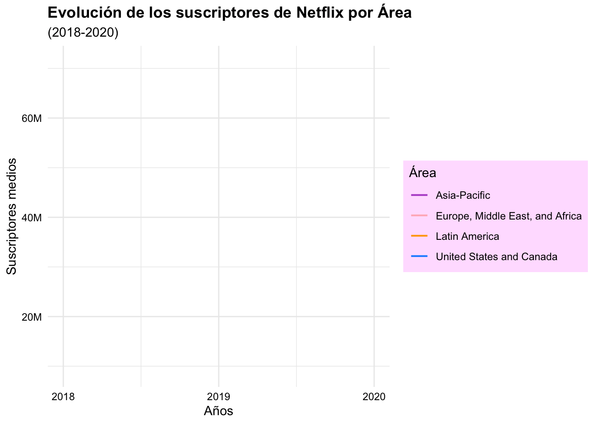
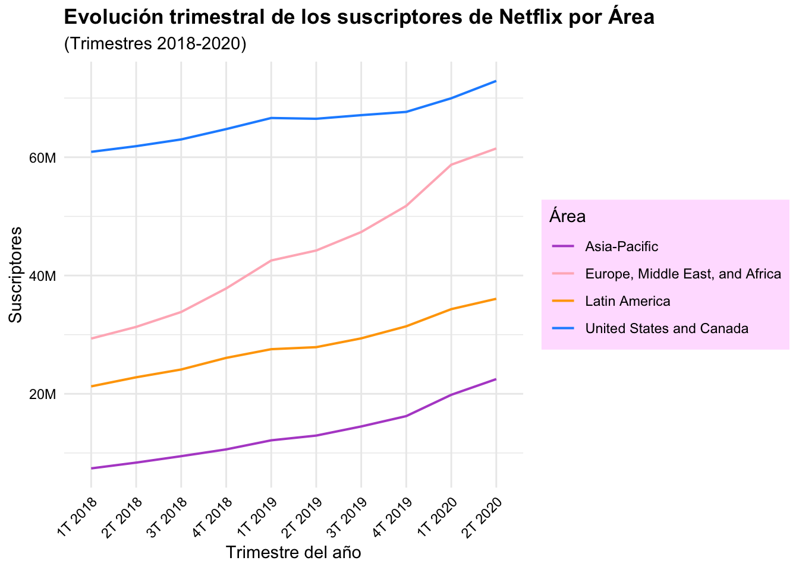
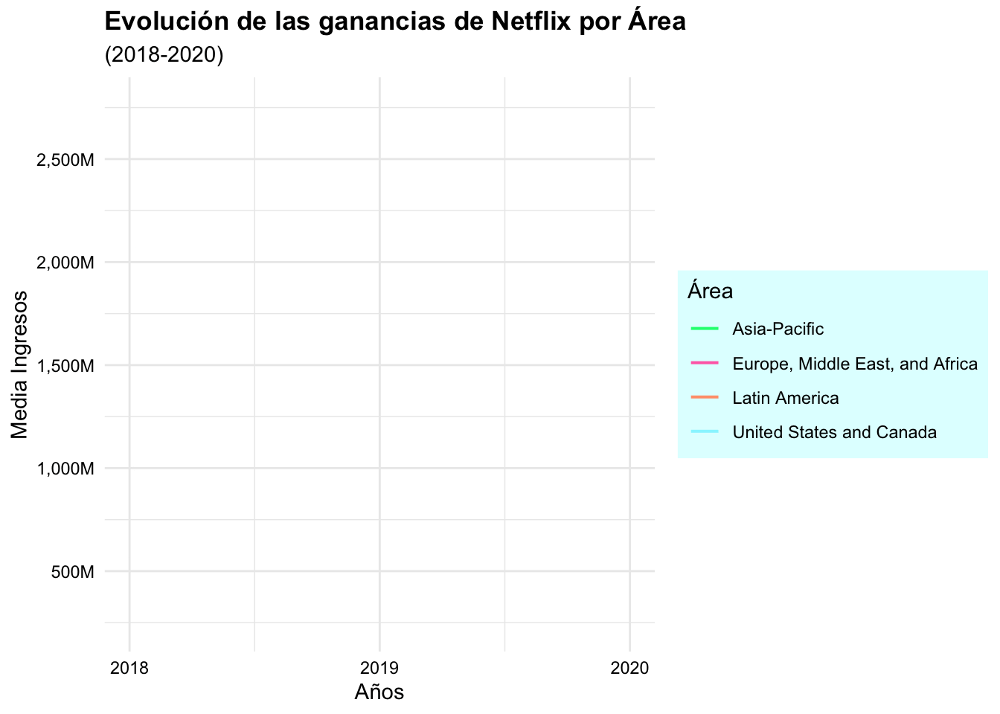
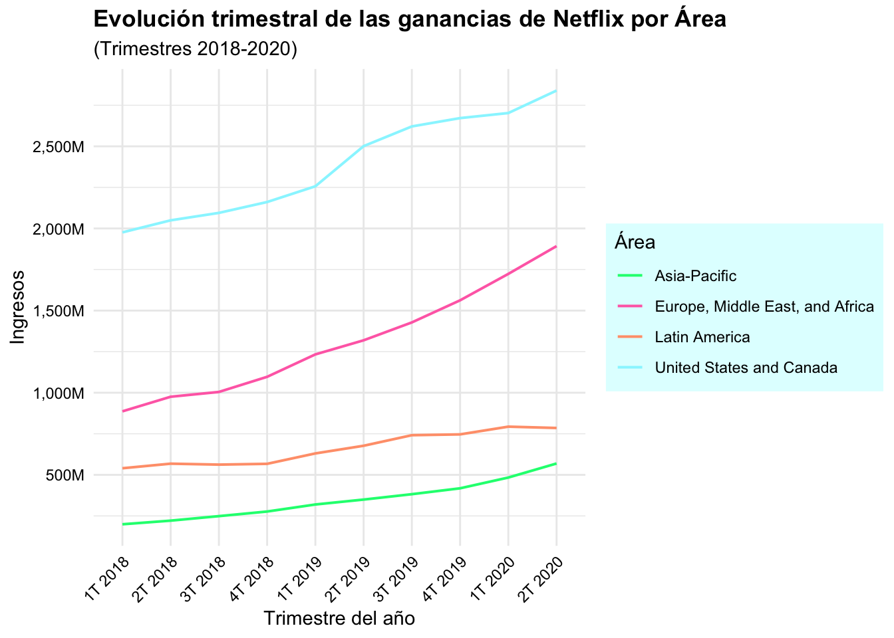
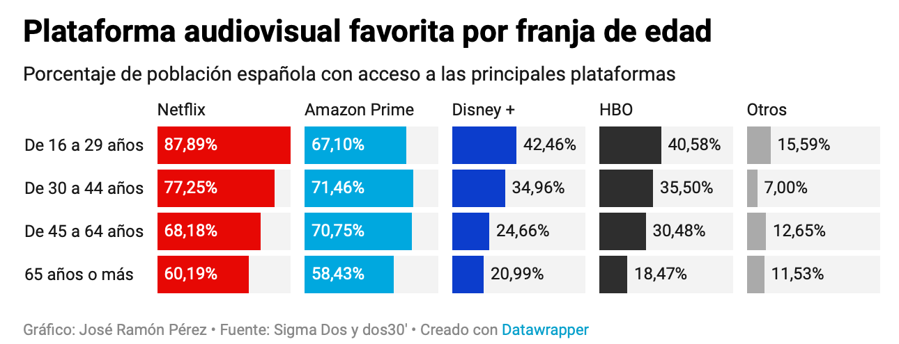

Se va a realizar un análisis de diversas variables relacionadas con las principales plataformas de streaming 1 debido al crecimiento que han experimentado sobretodo en los últimos años. Las plataformas de streaming Netflix, Prime Video, Hulu y Disney+ ofrecen un gran catálogo de películas, series y documentales acumulando más de 160 millones de suscriptores en todo el mundo. Estas se han convertido en una parte crucial de la industria del entretenimiento y cada vez hay más variedad y más individuos que las eligen por su versatilidad y rapidez ya que se puede consumir en cualquier lugar del mundo y a cualquier hora.
En concreto, en este trabajo se va a analizar:
El número de películas que produce cada país disponibles en streaming.
La cantidad de películas disponibles en cada plataforma.
El idioma principal de las películas.
Los diferentes grupos de edad recomendados en las películas de cada plataforma.
La categoría o género principal de las películas.
Las películas mejor valoradas de cada plataforma.
El caso de Netflix.
Plataformas Streaming
⭐ Alguna información interesante para los precios de 2024 de las plataformas de streaming en España: aquí
Los datos se pueden obtener de la web Kaggle donde hay gran diversidad de datos. He seleccionado varios conjuntos de datos para tener variedad en cuanto a plataformas, géneros de las producciones, países con más volumen de producciones, títulos de series o películas con su popularidad, número de temporadas o donde están disponibles, ganancias, suscriptores… El año analizado de la mayoría de los datos es 2022.
El dataset df_stream_kaggle.csv contiene 18719 observaciones sobre un conjunto de 22 columnas.
El dataset df_movies_streaming_platforms_2022.csv contiene 9515 observaciones sobre un conjunto de 11 columnas.
El dataset df_moviestreams.csv contiene 16744 observaciones sobre un conjunto de 17 columnas.
El dataset df_netflix_subscribers.csv contiene 4 observaciones sobre un conjunto de 11 columnas.
El dataset df_netflix_revenue.csv contiene 4 observaciones sobre un conjunto de 11 columnas.
Código
# Estos son los paquetes que he utilizado:#| eval: truelibrary(rio)library(dplyr)library(tidyr)library(tidyverse)library(ggplot2)library(ggthemes)library(ggThemeAssist)library(plotly)library(gganimate)library(patchwork)library(RColorBrewer)library(wordcloud)library(knitr)library(kableExtra)# Cargamos todos los datos que voy a utilizar:archivo_de_destino <- here::here("datos", "df_stream_kaggle.csv")df_stream_kaggle <- rio::import(archivo_de_destino)archivo_de_destino <- here::here("datos", "df_movies_streaming_platforms_2022.csv")df_movies_streaming_platforms_2022 <- rio::import(archivo_de_destino)archivo_de_destino <- here::here("datos", "df_moviestreams.csv")df_moviestreams <- rio::import(archivo_de_destino)archivo_de_destino <- here::here("datos", "df_netflix_subscribers.csv")df_netflix_subscribers <- rio::import(archivo_de_destino) archivo_de_destino <- here::here("datos", "df_netflix_revenue.csv")df_netflix_revenue <- rio::import(archivo_de_destino)
1. Países que realizan un mayor número de producción de películas en las plataformas de streaming.
Código
#- Gráfico dividido según tamaño en cuanto al número de producción de películas disponibles en streaming para cada país.df_stream_kaggle_paises <- df_stream_kaggle %>%separate_rows(production_countries, sep =",") %>%filter(production_countries !="") %>%count(production_countries) %>%arrange(desc(n)) plot_ly(data = df_stream_kaggle_paises, labels =~production_countries, parents =~"", values =~n, type ='treemap') %>%layout(title ="Número de producciones realizadas por cada país")
En este gráfico se pueden observar el número de producciones para plataformas de streaming realizadas por cada país (eliminando las producciones que son realizadas simultáneamente por diversos países). Los países donde más producciones se realizan son Estados Unidos con 12253 y siguiéndole India con 1544, Gran Bretaña con 1533, Canadá con 899 y Francia con 672. Esta información tiene relación con que los países del ranking son los que destacan en general por su producción de filmes y que tienen mayor impacto por su gran recaudación en ingresos de cada película.
Si se busca España en el conjunto de datos, este país ha realizado 294 producciones.
🗺️ Información interesante sobre las películas nacionales favoritas de cada país: aquí
2. Cantidad de películas disponibles en las plataformas de streaming principales
Código
#- Convertimos las columnas en numeric, quitamos NA y contamos el número de películas disponibles para cada servicio de streaming creando una columna para ello y el gráfico de barras plotly.streaming_platforms_2022 <-read.csv(file ='datos/df_movies_streaming_platforms_2022.csv')streaming_platforms_separado <- streaming_platforms_2022 %>%separate(col = Rotten.Tomatoes, into =c("score", "borrar"),sep ="/") %>%select(-borrar) streaming_platforms_separado$score <-as.numeric(streaming_platforms_separado$score) streaming_platforms_separado = streaming_platforms_separado %>%drop_na() %>%mutate(plataformas =ifelse(Netflix ==1, "netflix",ifelse(Hulu ==1, "hulu",ifelse(Prime.Video ==1, "prime",ifelse(Disney. ==1, "disney", "ups"))))) cantidad_de_peliculas = streaming_platforms_separado %>%count(plataformas, name ="cantidad")p2 <-ggplot(cantidad_de_peliculas, aes(x = plataformas, y = cantidad, fill = plataformas)) +geom_bar(stat ="identity") +scale_fill_manual(values =c("#0000CD", "#00FF7F", "#FF0000", "#63B8FF")) +labs(title ="Cantidad de películas en cada servicio de streaming",subtitle ="en 2022",x ="Plataforma",y ="Cantidad") +theme_minimal() +theme(panel.grid.major =element_line(colour ="white"),panel.grid.minor =element_line(colour ="white"),axis.text.x =element_text(family ="mono"),axis.text.y =element_text(family ="mono"))plotly::ggplotly(p2)
Se observa así que las plataformas en 2022 con más películas fueron en primer lugar, Prime video y en segundo lugar, Netflix con gran diferencia frente Disney + y Hulu y esto podría ser debido a que son más conocidas y en la mayoría de países se pueden contratar. Aunque estas cifras suelen variar debido a que el catálogo de películas ofrecido para cada país puede variar y recientemente todas han experimentado un aumento de sus producciones y Disney + ha aumentado su catálogo.
Cabe indicar que la creación y fundación de cada compañía y primer año de operación fueron 2006 para Prime Video, 1997 para Netflix, 2007 para Hulu y 2019 para Disney +.
3. División por idioma principal para las películas disponibles en streaming
Código
#- Primero convertimos los espacios vacíos en NA y los eliminamos, realizamos un recuento de los idiomas de las películas y seleccionamos los 10 idiomas más utilizados. En el data frame idiomas, se observa el número de películas en cada idioma. Y el gráfico está en % calculados a partir de los datos. Ajustamos texto, valores, colores y leyenda para el gráfico.df_moviestreams <- df_moviestreams %>%mutate(Language =as.character(na_if(Language, "")))idiomas <- df_moviestreams %>%filter(!is.na(Language)) %>%group_by(Language) %>%summarise(count =n()) %>%arrange(desc(count)) %>%top_n(10)p3 <-plot_ly(idiomas, labels =~Language, values =~count, type ="pie", text =~ifelse(count >max(count) *0.05, paste0(Language, "<br>", round(count /sum(count) *100, 1), "%"), ""),width =800, height =450) %>%layout(margin =list(l =0, r =0, b =0, t =50), showlegend =TRUE, legend =list(x =0.05, y =0.9),annotations =list(x =0.95, y =1,text ="Idiomas más utilizados en las películas",showarrow =FALSE,xref ="paper",yref ="paper")) %>%add_trace(hoverinfo ='label+percent', textposition ='outside',marker =list(colors =c("#98F5FF", "#FF6A6A", "#C1FFC1", "#FF6EB4", "#FFF0F5", "chocolate1", "red", "violet", "yellow", "grey"),line =list(color ='black', width =2)))p3
Se observa en este gráfico para el conjunto de plataformas de streaming analizadas: Netflix, Hulu, Prime Video y Disney que la mayoría de películas tienen como idioma principal el inglés (84,90 % = 10955 películas). Siguiéndole pero en menor proporción, está el hindi (3,90 % = 503 películas), el inglés y el español (2,14 % = 276 películas) y el español (2,07 % = 267 películas). Este hecho tiene gran relación con que el mayor número de producciones de películas sea Estados Unidos, cuyo idioma principal es el inglés, como se ha analizado en el primer gráfico.
Asimismo, el inglés y el español están entre los idiomas más hablados del mundo con aproximadamente 1,452 millones y 548 millones de hablantes respectivamente.
4.1 División por plataforma y edad recomendada
Código
#- Primero convertimos los espacios vacíos en NA y los eliminamos, realizamos un recuento por recomendación de mínimo de edad para ver las películas en cada plataforma de streaming creando la columna Platform. Si quisieramos solo ver una plataforma y sus rangos de edad, deberíamos filtrar ej: df_netflix <- df_edad_platform_long %>% filter(Platform == "Netflix").df_moviestreams <- df_moviestreams %>%mutate(Age =as.character(na_if(Age, "")))df_edad_platform <- df_moviestreams %>%select(`Netflix`, `Hulu`, `Prime Video`, `Disney+`, Age) %>%filter(!is.na(Age))df_edad_platform_long <- df_edad_platform %>%gather(Platform, Value, -Age) %>%filter(Value ==1) %>%group_by(Platform, Age) %>%summarise(count =n())p4 <-ggplot(df_edad_platform_long, aes(x = Age, y = count, fill = Platform)) +geom_bar(stat ="identity") +scale_fill_manual(values =c("#0000CD", "#00FF7F", "#FF0000", "#63B8FF")) +facet_wrap(vars(Platform), nrow =4, ncol =2, scales ="free") +labs(title ="Distribución de películas por grupo de edad",x ="Grupo de Edad",y ="Número de Películas",fill ="Plataforma de Streaming") +theme_minimal() +theme(axis.text.x =element_text(family ="mono"),axis.text.y =element_text(family ="mono"))plotly::ggplotly(p4)
Así, visualmente se observa que la plataforma de streaming con más películas de edad mínima + 18 recomendada para verlas es Prime Video (2612) y la plataforma de streaming con más películas para todos los públicos (all) o + 7 años también sería Prime Video con 1322 películas (406 y 916). Siguiéndole Disney + con 456 películas (277 y 179 respectivamente), aunque Netflix se le aproxima con 453 películas (130 y 323 respectivamente). Esto se debe en realidad al hecho de que el catálogo de Prime Video y Netflix es mucho mayor como ya se ha analizado anteriormente.
Así, si se observará cada plataforma individualmente, sin ver las demás, Disney + destacaría por su cantidad de películas para todos los públicos o mayores de 7 años y Prime Video, Netflix y Hulu por su cantidad de películas recomendadas para mayores de 18 años.
También, hay que tener en cuenta el eje y para el análisis, dado que este es libre para cada plataforma según su número de películas para así representarse de acuerdo a cada plataforma.
Este resultado tiene relación con el grupo objetivo al que se dirige cada plataforma como se va a indicar posteriormente.
4.2 Edad recomendada para películas de cada plataforma de streaming
Código
#- Primero convertimos los espacios vacíos en NA y los eliminamos, realizamos un recuento por recomendación de mínimo de edad para ver las películas en cada plataforma de streaming. df_moviestreams <- df_moviestreams %>%mutate(Age =as.character(na_if(Age, "")))df_edad_platform <- df_moviestreams %>%select(`Netflix`, `Hulu`, `Prime Video`, `Disney+`, Age) %>%filter(!is.na(Age))df_edad_platform_long <- df_edad_platform %>%gather(Platform, Value, -Age) %>%filter(Value ==1)p5 <-ggplot(df_edad_platform_long, aes(x = Age, fill = Platform)) +geom_bar(position ="dodge", show.legend =TRUE) +scale_fill_manual(values =c("#0000CD", "#00FF7F", "#FF0000", "#63B8FF")) +labs(title ="Distribución de películas por grupo de edad en cada plataforma",x ="Grupo de Edad",y ="Número de Películas", fill ="Plataforma") +theme_minimal() +theme(axis.text.x =element_text(family ="mono"),axis.text.y =element_text(family ="mono"))plotly::ggplotly(p5)
Para 2022, si analizamos el conjunto de películas de cada plataforma y a partir de la edad recomendada, se puede analizar visualmente lo ya comentado.
Esta visualización cuyo eje y sí comienza en 0, indica claramente que plataforma tiene más cantidad de películas para cada grupo de edad recomendado.
El grupo objetivo de cada plataforma y mayor audiencia es para Disney + más infantil-juvenil y para familias mientras que para las otras plataformas, son generalmente jóvenes y adultos.
5. Categoría de las películas
En cuanto a las categorías de las películas, existen muchas categorías pero si destacamos la principal de cada categoría, podemos encontrar 19 categorías, de cuál en global para las plataformas, predomina drama 🎭 (4592) , comedia 🤪 (3412) y thriller 😨 (2225).
Código
#- wordcloud del género principal de las películasdf_genres <- df_stream_kaggle %>%group_by(main_genre) %>%summarise(count =n()) %>%ungroup() %>%arrange(desc(count))df_genres$main_genre <-factor(df_genres$main_genre)wordcloud(words = df_genres$main_genre, freq = df_genres$count, min.freq =50, scale=c(3,1), colors=brewer.pal(8, "Dark2"))
Si dividimos por plataforma de streaming, el género principal de sus películas, se observa que:
Para Amazon la mayoría de sus películas son drama, comedia y thriller. 🎭 🤪 😨
Para Disney la mayoría de sus películas son comedia, documentales y fantasía. 🤪 📹 🧚♀️
Para Hulu la mayoría de sus películas son drama, comedia y thriller. 🎭 🤪 😨
Para Netflix la mayoría de sus películas son comedia, drama y documentales. 🤪 🎭 📹
Código
#- filtramos para las plataformas que estamos analizando y agrupamos por plataforma y género principal de sus películas y realizamos un summarise. Así, se observa de número de películas para cada plataforma qué pertenecen a cada categoría principaldf_genres_by_platform <- df_stream_kaggle %>%filter(streaming_service %in%c("netflix", "amazon", "hulu", "disney")) %>%group_by(streaming_service, main_genre) %>%summarise(count =n()) %>%ungroup()df_genres_by_platform$main_genre <-factor(df_genres_by_platform$main_genre)p6 <-ggplot(df_genres_by_platform, aes(x = streaming_service, y = count, color = main_genre)) +geom_point(position =position_dodge(width =0.8), size =3) +labs(title ="Número de Películas por Plataforma y Categoría de Género",x ="Plataforma de Streaming",y ="Número de Películas por Género",color ="Categoría principal") +theme_minimal() +theme(axis.text.x =element_text(angle =45, hjust =1),legend.text =element_text(size =8)) +theme(axis.text.x =element_text(family ="mono"),axis.text.y =element_text(family ="mono"))plotly::ggplotly(p6)
Así, estas plataformas ofrecen más variedad de esas 3 categorías indicadas, aunque también disponen de un catálogo amplio de otras variedades como se puede ver en el data frame. También, cabe comentar que el género mayoritario de las películas tiene relación con el público al que van dirigido estas plataformas, siendo Disney + para todos los públicos y Amazon, Hulu y Netflix para un público juvenil-adulto, como se ha comentado.
Géneros cinematográficos más populares
6. Películas más famosas en cada plataforma
En cuanto a las películas, estas se pueden valorar en este data frame a través del IMDb score y IMDb votes 2, TMDb score y TMDb votes. Las cinco películas que han recibido un mayor número de votos de cada plataforma y así, un IMDb score mayor de entre estas en cada plataforma son las siguientes. Hay que tener en cuenta que se está realizando la tabla por orden descendente de mayor votos en función del IMDb votes siendo la primera película que más votos ha recibido.
6.1 Para Amazon, el ranking de películas mejor valoradas es Titanic (1133692 votos y 7.9 score), The Usual Suspects (1059480 votos y 8.5 score), Braveheart (1016629 votos y 8.4 score), The Sixth Sense (967864 votos y 8.2 score) y The Terminator (841706 votos y 8.1 score).
Código
#- filtramos por la plataforma seleccionada, ordenamos por la variable IMDB votes de mayor a menor y seleccionamos las 5 películas mejor valoradas junto a las variables indicadas. Se realiza una tabla y modificamos la estética.top_películas_plataformas <- df_stream_kaggle %>%filter(streaming_service %in%c("amazon")) %>%arrange(desc(imdb_votes)) %>%select(streaming_service, title, release_year, runtime, imdb_score, imdb_votes) %>%group_by(streaming_service) %>%slice_head(n =5)tabla_amazon <-kable(head(top_películas_plataformas),caption =paste("Top 5 películas de Amazon"),col.names =c("Plataforma", "Nombre", "Año", "Duración minutos", "IMDb Score", "IMDb Votes") ) %>%kable_styling(full_width =FALSE, position ="center") %>%row_spec(0, background ="#63B8FF") %>%column_spec(c(5), background ="#CAFF70", color ="black") %>%column_spec(c(1, 2, 3, 4, 6), background ="#F0FFFF", color ="black")tabla_amazon
Top 5 películas de Amazon
Plataforma
Nombre
Año
Duración minutos
IMDb Score
IMDb Votes
amazon
Titanic
1997
194
7.9
1133692
amazon
The Usual Suspects
1995
106
8.5
1059480
amazon
Braveheart
1995
177
8.4
1016629
amazon
The Sixth Sense
1999
107
8.2
967864
amazon
The Terminator
1984
108
8.1
841706
6.2 Para Netflix, el ranking de películas mejor valoradas es Inception (2294231 votos y 8.8 score), Forrest Gump (2021343 votos y 8.8 score), The Dark Knight Rises (1669067 votos y 8.4 score), Se7en (1606270 votos y 8.6 score) y Django Unchained (1472668 votos y 8.4 score).
6.3 Para Hulu, el ranking de películas mejor valoradas es Deadpool (996056 votos y 8.0 score), A Beautiful Mind (909359 votos y 8.2 score), Black Swan (745933 votos y 8.0 score), Parasite (742045 votos y 8.5 score) y Prisoners (679548 votos y 8.1 score).
6.4 Para Disney +, el ranking de películas mejor valoradas es The Avengers (1353907 votos y 8.0 score), Star Wars (1321489 votos y 8.6 score), The Empire Strikes Back (1248319 votos y 8.7 score), Avatar (1193331 votos y 7.8 score) y Guardians of the Galaxy (1125382 votos y 8.0 score).
Netflix, Inc es una compañía creada en 1997 con sede en Estados Unidos. La compañía se define en su reporte anual a los inversores como “uno de los líderes mundiales del entretenimiento con aproximadamente 222 millones de suscriptores en alrededor de 190 países con series de televisión, documentales, largometrajes y juegos de móviles a través de una gran variedad de géneros e idiomas” (Netflix, 2022).
Su estrategia consiste en incrementar el número de suscriptores globalmente y continuamente están mejorando la experiencia de la plataforma a través de la expansión continua de su contenido que atrae a nuevos miembros y hace que los antiguos permanezcan (Netflix, 2022). Además, Netflix no solo ofrece series y películas ajenas (cuyas licencias obtiene) sino que se encarga de producir sus propias licencias.
NETFLIX
7.1 Número de suscriptores de esta plataforma
En este caso, los datos sobre los suscriptores están para los 4 trimestres de 2018, los 4 trimestres de 2019 y para dos trimestres de 2020. Así, se puede calcular una media de los trimestres para cada año, para así ver la evolución de los suscriptores de estos años de forma dinámica y animada. Pero también, se puede observar la evolución trimestral dado que de un trimestre a otro del mismo año, los suscriptores también aumentan.
Hay que tener en cuenta que el eje y del gráfico no comienza en 0, sino en aproximadamente 7 M.
#- gráfico para los suscriptores anuales de NETFLIX. Pero primero modificar los datos.data_subscribers <-data.frame(Area =c("United States and Canada", "Latin America", "Europe, Middle East, and Africa", "Asia-Pacific"),Q1_2018 =c(60909000, 21260000, 29339000, 7394000),Q2_2018 =c(61870000, 22795000, 31317000, 8372000),Q3_2018 =c(63010000, 24115000, 33836000, 9461000),Q4_2018 =c(64757000, 26077000, 37818000, 10607000),Q1_2019 =c(66633000, 27547000, 42542000, 12141000),Q2_2019 =c(66501000, 27890000, 44229000, 12942000),Q3_2019 =c(67114000, 29380000, 47355000, 14485000),Q4_2019 =c(67662000, 31417000, 51778000, 16233000),Q1_2020 =c(69969000, 34318000, 58734000, 19835000),Q2_2020 =c(72904000, 36068000, 61483000, 22492000))data_subscribers <- data_subscribers %>%pivot_longer(cols =starts_with("Q"), names_to ="Quarter", values_to ="Subscribers") %>%mutate(Year =substr(Quarter, start =4, stop =7),Quarter =substr(Quarter, start =1, stop =2)) data_subscribers1 <- data_subscribers %>%group_by(Area, Year) %>%summarise(media_trimestral =mean(Subscribers)) %>%ungroup()data_subscribers1$Year <-as.Date(paste0(data_subscribers1$Year, "-01-01"))data_subscribers1$Year <-as.Date(data_subscribers1$Year, format ="%Y")mis_colores <-c("United States and Canada"="#1E90FF","Latin America"="#FFA500","Europe, Middle East, and Africa"="#FFB6C1","Asia-Pacific"="#B452CD")breaks <-seq(min(data_subscribers1$Year), max(data_subscribers1$Year), length.out =3)p7 <-ggplot(data_subscribers1, aes(x = Year, y = media_trimestral, color = Area)) +geom_line(linewidth =0.7) +labs(title ="Evolución de los suscriptores de Netflix por Área", subtitle ="(2018-2020)",x ="Años", y ="Suscriptores medios",color ="Área") +theme_minimal() +scale_y_continuous(labels = scales::comma_format(scale =1e-6, suffix ="M")) +scale_color_manual(values = mis_colores) +scale_x_date(breaks = breaks, labels =format(breaks, "%Y")) +theme(plot.title =element_text(face ="bold"),legend.key =element_rect(fill ="thistle1"),legend.background =element_rect(fill ="thistle1")) +theme(axis.text =element_text(colour ="black"),axis.text.x =element_text(colour ="black"),axis.text.y =element_text(colour ="black"),legend.background =element_rect(colour ="white")) +theme(legend.key =element_rect(colour ="thistle1")) +transition_reveal(Year)p7

Código
#- gráfico para los suscriptores trimestrales de NETFLIX. Pero primero modificar los datos.data_subscribers <-data.frame(Area =c("United States and Canada", "Latin America", "Europe, Middle East, and Africa", "Asia-Pacific"),Q1_2018 =c(60909000, 21260000, 29339000, 7394000),Q2_2018 =c(61870000, 22795000, 31317000, 8372000),Q3_2018 =c(63010000, 24115000, 33836000, 9461000),Q4_2018 =c(64757000, 26077000, 37818000, 10607000),Q1_2019 =c(66633000, 27547000, 42542000, 12141000),Q2_2019 =c(66501000, 27890000, 44229000, 12942000),Q3_2019 =c(67114000, 29380000, 47355000, 14485000),Q4_2019 =c(67662000, 31417000, 51778000, 16233000),Q1_2020 =c(69969000, 34318000, 58734000, 19835000),Q2_2020 =c(72904000, 36068000, 61483000, 22492000))data_subscribers <- data_subscribers %>%pivot_longer(cols =starts_with("Q"), names_to ="Quarter", values_to ="Subscribers") %>%mutate(Year =substr(Quarter, start =4, stop =7),Quarter =substr(Quarter, start =1, stop =2)) data_subscribers$Year <-as.Date(paste0(data_subscribers$Year, format ="-01-01"))mis_colores <-c("United States and Canada"="#1E90FF","Latin America"="#FFA500","Europe, Middle East, and Africa"="#FFB6C1","Asia-Pacific"="#B452CD")p7 <-ggplot(data_subscribers, aes(x =paste(Year, Quarter), y = Subscribers, color = Area, group = Area)) +geom_line(linewidth =0.7) +labs(title ="Evolución trimestral de los suscriptores de Netflix por Área", subtitle ="(Trimestres 2018-2020)",x ="Trimestre del año", y ="Suscriptores",color ="Área") +theme_minimal() +scale_y_continuous(labels = scales::comma_format(scale =1e-6, suffix ="M")) +scale_color_manual(values = mis_colores) +theme(axis.text.x =element_text(angle =45, hjust =1)) +scale_x_discrete(labels =c("1T 2018", "2T 2018", "3T 2018", "4T 2018","1T 2019", "2T 2019", "3T 2019", "4T 2019","1T 2020", "2T 2020")) +theme(plot.title =element_text(face ="bold"),legend.key =element_rect(fill ="thistle1"),legend.background =element_rect(fill ="thistle1")) +theme(axis.text =element_text(colour ="black"),axis.text.x =element_text(colour ="black"),axis.text.y =element_text(colour ="black"),legend.background =element_rect(colour ="white")) +theme(legend.key =element_rect(colour ="thistle1")) p7

🌐 Los sucriptores de Netflix han ido aumentando considerablemente desde sus inicios y en concreto, en los años analizados (2018-2020). Esta plataforma se encuentra en gran diversidad de países y su catálogo también se adapta según el país. Así, en 2018 y 2020 por regiones:
En 2018, en el área Asia-Pacifico el número de suscriptores era de 8958500 y en 2020 21163500. La variación en esos tres años fue de + 12205000.
En 2018, en el área Europa, Asia Central y África el número de suscriptores era de 33077500 y en 2020 60108500.La variación en esos tres años fue de + 27031000.
En 2018, en el área América del Sur el número de suscriptores era de 23561750 y en 2020 35193000. La variación en esos tres años fue de + 11631250.
En 2018, en el área Estados Unidos y Canadá el número de suscriptores era de 62636500 y en 2020 71436500. La variación en esos tres años fue de + 8800000.
Como se observa en el gráfico, la tendencia es creciente en todas las regiones siendo en Estados Unidos y en Canadá el mayor número de suscriptores. Si analizamos las variaciones, la región que ha observado un mayor aumento es Europa, Asia Central y África.
También, se pueden observan los suscriptores por trimestre de 2018 a 2020 con las mismas conclusiones.
“Netflix bate récord de suscriptores: llega a los 247,1 millones tras sumar 8,8 millones de nuevos usuarios en 2023” El Español
7.2 Ganancias de esta plataforma
En este caso, los datos sobre las ganancias están para los 4 trimestres de 2018, los 4 trimestres de 2019 y para dos trimestres de 2020. Así, se puede calcular una media de los trimestres para cada año, para así ver la evolución de las ganancias de estos años de forma dinámica y animada. Pero también, se puede observar la evolución trimestral dado que de un trimestre a otro del mismo año, las ganancias también aumentan. Hay que tener en cuenta que el eje y del gráfico no comienza en 0, sino en aproximadamente 199 M.
#- gráfico para las ganancias anuales de NETFLIX. Pero primero modificar los datos.data_revenue <-data.frame(Area =c("United States and Canada", "Latin America", "Europe, Middle East, and Africa", "Asia-Pacific"),Q1_2018 =c(1976157000, 540182000, 886649000, 199117000),Q2_2018 =c(2049546000, 568071000, 975497000, 221252000),Q3_2018 =c(2094850000, 562307000, 1004749000, 248691000),Q4_2018 =c(2160979000, 567137000, 1096812000, 276756000),Q1_2019 =c(2256851000, 630472000, 1233379000, 319602000),Q2_2019 =c(2501199000, 677136000, 1319087000, 349494000),Q3_2019 =c(2621250000, 741434000, 1428040000, 382304000),Q4_2019 =c(2671908000, 746392000, 1562561000, 418121000),Q1_2020 =c(2702776000, 793453000, 1723474000, 483660000),Q2_2020 =c(2839670000, 785368000, 1892537000, 569140000))data_revenue <- data_revenue %>%pivot_longer(cols =starts_with("Q"), names_to ="Quarter", values_to ="Revenue") %>%mutate(Year =substr(Quarter, start =4, stop =7),Quarter =substr(Quarter, start =1, stop =2)) data_revenue1 <- data_revenue %>%group_by(Area, Year) %>%summarise(media_trimestral =mean(Revenue)) %>%ungroup()data_revenue1$Year <-as.Date(paste0(data_revenue1$Year, format ="-01-01"))data_revenue1$Year <-as.Date(data_revenue1$Year, format ="%Y")mis_colores <-c("United States and Canada"="#98F5FF","Latin America"="#FFA07A","Europe, Middle East, and Africa"="#FF6EB4","Asia-Pacific"="#00FF7F")breaks <-seq(min(data_revenue1$Year), max(data_revenue1$Year), length.out =3)p8 <-ggplot(data_revenue1, aes(x = Year, y = media_trimestral, color = Area)) +geom_line(linewidth =0.7) +labs(title ="Evolución de las ganancias de Netflix por Área", subtitle ="(2018-2020)",x ="Años", y ="Media Ingresos",color ="Área") +theme_minimal() +scale_y_continuous(labels = scales::comma_format(scale =1e-6, suffix ="M"),breaks =seq(0, max(data_revenue$Revenue), by =500000000)) +scale_color_manual(values = mis_colores) +scale_x_date(breaks = breaks, labels =format(breaks, "%Y")) +theme(plot.title =element_text(face ="bold"),legend.key =element_rect(fill ="lightcyan"),legend.background =element_rect(fill ="lightcyan")) +theme(axis.text =element_text(colour ="black"),axis.text.x =element_text(colour ="black"),axis.text.y =element_text(colour ="black"),legend.background =element_rect(colour ="white")) +theme(legend.key =element_rect(colour ="lightcyan")) +transition_reveal(Year)p8

Código
#- gráfico para las ganancias trimestrales de NETFLIX. Pero primero modificar los datos.data_revenue <-data.frame(Area =c("United States and Canada", "Latin America", "Europe, Middle East, and Africa", "Asia-Pacific"),Q1_2018 =c(1976157000, 540182000, 886649000, 199117000),Q2_2018 =c(2049546000, 568071000, 975497000, 221252000),Q3_2018 =c(2094850000, 562307000, 1004749000, 248691000),Q4_2018 =c(2160979000, 567137000, 1096812000, 276756000),Q1_2019 =c(2256851000, 630472000, 1233379000, 319602000),Q2_2019 =c(2501199000, 677136000, 1319087000, 349494000),Q3_2019 =c(2621250000, 741434000, 1428040000, 382304000),Q4_2019 =c(2671908000, 746392000, 1562561000, 418121000),Q1_2020 =c(2702776000, 793453000, 1723474000, 483660000),Q2_2020 =c(2839670000, 785368000, 1892537000, 569140000))data_revenue <- data_revenue %>%pivot_longer(cols =starts_with("Q"), names_to ="Quarter", values_to ="Revenue") %>%mutate(Year =substr(Quarter, start =4, stop =7),Quarter =substr(Quarter, start =1, stop =2)) data_revenue$Year <-as.Date(paste0(data_revenue$Year, format ="-01-01"))p8 <-ggplot(data_revenue, aes(x =paste(Year, Quarter), y = Revenue, color = Area, group = Area)) +geom_line(linewidth =0.7) +labs(title ="Evolución trimestral de las ganancias de Netflix por Área", subtitle ="(Trimestres 2018-2020)",x ="Trimestre del año", y ="Ingresos",color ="Área") +theme_minimal() +scale_y_continuous(labels = scales::comma_format(scale =1e-6, suffix ="M"),breaks =seq(0, max(data_revenue$Revenue), by =500000000)) +theme(axis.text.x =element_text(angle =45, hjust =1)) +scale_color_manual(values = mis_colores) +scale_x_discrete(labels =c("1T 2018", "2T 2018", "3T 2018", "4T 2018","1T 2019", "2T 2019", "3T 2019", "4T 2019","1T 2020", "2T 2020")) +theme(plot.title =element_text(face ="bold"),legend.key =element_rect(fill ="lightcyan"),legend.background =element_rect(fill ="lightcyan")) +theme(axis.text =element_text(colour ="black"),axis.text.x =element_text(colour ="black"),axis.text.y =element_text(colour ="black"),legend.background =element_rect(colour ="white")) +theme(legend.key =element_rect(colour ="lightcyan")) p8

💰 Las ganancias de Netflix han ido aumentando considerablemente desde sus inicios y en concreto, en los años analizados (2018-2020). Esta plataforma ha aumentando sus ganancias en todas las regiones. Así, en 2018 y 2020 por regiones:
En 2018, en el área Asia-Pacifico las ganancias eran de 236454000 y en 2020 526400000. La variación en esos tres años fue de + 289946000.
En 2018, en el área Europa, Asia Central y África las ganancias eran de 990926750 y en 2020 1808005500.La variación en esos tres años fue de + 817078750.
En 2018, en el área América del Sur las ganancias eran de 559424250 y en 2020 789410500. La variación en esos tres años fue de + 229986250.
En 2018, en el área Estados Unidos y Canadá las ganancias eran de 2070383000 y en 2020 2771223000. La variación en esos tres años fue de + 700840000.
Como se observa en el gráfico, la tendencia es creciente en todas las regiones siendo en Estados Unidos y en Canadá el mayor número de ganancias. Si analizamos las variaciones, la región que ha observado un mayor aumento es Europa, Asia Central y África (mayor número de suscriptores indica mayores ganancias)
También, se pueden observan las ganancias por trimestre de 2018 a 2020 con las mismas conclusiones.
“La compañía logró un beneficio neto de 1.677 millones de dólares (1.594 millones de euros). También consiguió unos ingresos de 8.542 millones de dólares, lo que supone un aumento del 7,8% con respecto al tercer trimestre de 2022” El Español
“La plataforma de streaming Netflix tuvo su mayor ganancia en Bolsa en más de dos años, tras dar a conocer que agregó 8.8 millones de nuevos suscriptores en el tercer trimestre de 2023.” El Economista
Conclusión
Actualmente, existen muchas plataformas de streaming para elegir. Algunas variables a tener en cuenta para la elección de estas son los precios, la cantidad de películas o series disponibles, el idioma principal o la categoría, como se ha analizado. Además, en todas ellas hay una variedad muy extensa de contenidos para poder elegir, por lo que la mayoría tienen grandes ofertas de catálogos de series, películas, documentales, producciones propias, animación, contenido infantil y demás.
Así que la elección de una plataforma de streaming depende de los intereses de cada uno; es más una cuestión subjetiva. Y muchos consumidores disponen de varias plataformas de streaming contratadas al mismo tiempo.

Preferencias de las plataformas Streaming obtenido de Data wrapper
Con esto acabo mi trabajo para BigData !! 🎥 🎞️ 🎬
Información sobre la sesión
Abajo muestro mi entorno de trabajo y paquetes utilizados
El streaming o contenido bajo demanda es la distribución de audio o video por Internet de forma continua y sin interrupción y sin necesidad de una descarga previa↩︎
El IMDb score and votes es la puntuación sobre 10 que se realiza por votación en Internet Movie Database; la base de datos de películas más grande en Internet.↩︎
Ejecutar el código
---title: "Análisis de las plataformas de streaming"description: | Estas plataformas han ido ganando importancia dentro de la industria del entretenimiento y se han convertido en parte de la vida cotidiana.author: - name: Nerea Escribano Soria affiliation: Universitat de València affiliation-url: https://www.uv.esdate: 2024-01-24 #--categories: [trabajo BigData, entretenimiento, plataformas, streaming] #--image: "./imagenes/imagen_01.png"title-block-banner: true #- {true, false, "green","#AA0000"}title-block-banner-color: "black" #-"#FFFFFF" toc-depth: 3smooth-scroll: trueformat: html: #backgroundcolor: "#AB82FF" #embed-resources: true link-external-newwindow: true #css: ./assets/my_css_file.css #- CUIDADO!!!!code-tools: truecode-link: true---## IntroducciónSe va a realizar un análisis de diversas variables relacionadas con las principales plataformas de streaming [^1] debido al crecimiento que han experimentado sobretodo en los últimos años. Las plataformas de streaming Netflix, Prime Video, Hulu y Disney+ ofrecen un gran catálogo de películas, series y documentales acumulando más de 160 millones de suscriptores en todo el mundo. Estas se han convertido en una parte crucial de la industria del entretenimiento y cada vez hay más variedad y más individuos que las eligen por su versatilidad y rapidez ya que se puede consumir en cualquier lugar del mundo y a cualquier hora.En concreto, en este trabajo se va a analizar:1. El número de películas que produce cada país disponibles en streaming.2. La cantidad de películas disponibles en cada plataforma.3. El idioma principal de las películas.4. Los diferentes grupos de edad recomendados en las películas de cada plataforma.5. La categoría o género principal de las películas.6. Las películas mejor valoradas de cada plataforma.7. El caso de Netflix.[^1]: El streaming o contenido bajo demanda es la distribución de audio o video por Internet de forma continua y sin interrupción y sin necesidad de una descarga previa> ⭐ Alguna información interesante para los precios de 2024 de las plataformas de streaming en España: [aquí](https://www.genbeta.com/a-fondo/netflix-prime-video-hbo-max-disney-cuanto-costaran-2024-principales-plataformas-streaming-espana){target="_blank"}------------------------------------------------------------------------## Obtención de datos::: panel-tabset## Datos utilizadosLos datos se pueden obtener de la web [Kaggle](https://www.kaggle.com){target="_blank"} donde hay gran diversidad de datos. He seleccionado varios conjuntos de datos para tener variedad en cuanto a plataformas, géneros de las producciones, países con más volumen de producciones, títulos de series o películas con su popularidad, número de temporadas o donde están disponibles, ganancias, suscriptores... El año analizado de la mayoría de los datos es 2022.- El dataset df_stream_kaggle.csv contiene 18719 observaciones sobre un conjunto de 22 columnas.- El dataset df_movies_streaming_platforms_2022.csv contiene 9515 observaciones sobre un conjunto de 11 columnas.- El dataset df_moviestreams.csv contiene 16744 observaciones sobre un conjunto de 17 columnas.- El dataset df_netflix_subscribers.csv contiene 4 observaciones sobre un conjunto de 11 columnas.- El dataset df_netflix_revenue.csv contiene 4 observaciones sobre un conjunto de 11 columnas.## Códigos```{r, echo = TRUE}# Estos son los paquetes que he utilizado:#| eval: truelibrary(rio)library(dplyr)library(tidyr)library(tidyverse)library(ggplot2)library(ggthemes)library(ggThemeAssist)library(plotly)library(gganimate)library(patchwork)library(RColorBrewer)library(wordcloud)library(knitr)library(kableExtra)# Cargamos todos los datos que voy a utilizar:archivo_de_destino <- here::here("datos", "df_stream_kaggle.csv")df_stream_kaggle <- rio::import(archivo_de_destino)archivo_de_destino <- here::here("datos", "df_movies_streaming_platforms_2022.csv")df_movies_streaming_platforms_2022 <- rio::import(archivo_de_destino)archivo_de_destino <- here::here("datos", "df_moviestreams.csv")df_moviestreams <- rio::import(archivo_de_destino)archivo_de_destino <- here::here("datos", "df_netflix_subscribers.csv")df_netflix_subscribers <- rio::import(archivo_de_destino) archivo_de_destino <- here::here("datos", "df_netflix_revenue.csv")df_netflix_revenue <- rio::import(archivo_de_destino) ```:::------------------------------------------------------------------------## 1. Países que realizan un mayor número de producción de películas en las plataformas de streaming.```{r, echo = TRUE, message = FALSE, warning = FALSE}#- Gráfico dividido según tamaño en cuanto al número de producción de películas disponibles en streaming para cada país.df_stream_kaggle_paises <- df_stream_kaggle %>%separate_rows(production_countries, sep =",") %>%filter(production_countries !="") %>%count(production_countries) %>%arrange(desc(n)) plot_ly(data = df_stream_kaggle_paises, labels =~production_countries, parents =~"", values =~n, type ='treemap') %>%layout(title ="Número de producciones realizadas por cada país")```<br>En este gráfico se pueden observar el número de producciones para plataformas de streaming realizadas por cada país (eliminando las producciones que son realizadas simultáneamente por diversos países). Los países donde más producciones se realizan son Estados Unidos con 12253 y siguiéndole India con 1544, Gran Bretaña con 1533, Canadá con 899 y Francia con 672. Esta información tiene relación con que los países del ranking son los que destacan en general por su producción de filmes y que tienen mayor impacto por su gran recaudación en ingresos de cada película. Si se busca España en el conjunto de datos, este país ha realizado 294 producciones.> 🗺️ Información interesante sobre las películas nacionales favoritas de cada país: [aquí](https://www.larazon.es/sociedad/20211124/jrpyi32v5fbidavs5q3kagv634.html){target="_blank"}------------------------------------------------------------------------## 2. Cantidad de películas disponibles en las plataformas de streaming principales```{r, message = FALSE, warning = FALSE}#- Convertimos las columnas en numeric, quitamos NA y contamos el número de películas disponibles para cada servicio de streaming creando una columna para ello y el gráfico de barras plotly.streaming_platforms_2022 <-read.csv(file ='datos/df_movies_streaming_platforms_2022.csv')streaming_platforms_separado <- streaming_platforms_2022 %>%separate(col = Rotten.Tomatoes, into =c("score", "borrar"),sep ="/") %>%select(-borrar) streaming_platforms_separado$score <-as.numeric(streaming_platforms_separado$score) streaming_platforms_separado = streaming_platforms_separado %>%drop_na() %>%mutate(plataformas =ifelse(Netflix ==1, "netflix",ifelse(Hulu ==1, "hulu",ifelse(Prime.Video ==1, "prime",ifelse(Disney. ==1, "disney", "ups"))))) cantidad_de_peliculas = streaming_platforms_separado %>%count(plataformas, name ="cantidad")p2 <-ggplot(cantidad_de_peliculas, aes(x = plataformas, y = cantidad, fill = plataformas)) +geom_bar(stat ="identity") +scale_fill_manual(values =c("#0000CD", "#00FF7F", "#FF0000", "#63B8FF")) +labs(title ="Cantidad de películas en cada servicio de streaming",subtitle ="en 2022",x ="Plataforma",y ="Cantidad") +theme_minimal() +theme(panel.grid.major =element_line(colour ="white"),panel.grid.minor =element_line(colour ="white"),axis.text.x =element_text(family ="mono"),axis.text.y =element_text(family ="mono"))plotly::ggplotly(p2)```<br>Se observa así que las plataformas en 2022 con más películas fueron en primer lugar, Prime video y en segundo lugar, Netflix con gran diferencia frente Disney + y Hulu y esto podría ser debido a que son más conocidas y en la mayoría de países se pueden contratar. Aunque estas cifras suelen variar debido a que el catálogo de películas ofrecido para cada país puede variar y recientemente todas han experimentado un aumento de sus producciones y Disney + ha aumentado su catálogo.Cabe indicar que la creación y fundación de cada compañía y primer año de operación fueron 2006 para Prime Video, 1997 para Netflix, 2007 para Hulu y 2019 para Disney +. <br><br>::: {layout-nrow=4}{width=100px height=100px}{width=100px height=100px}{width=100px height=100px}{width=100px height=100px }:::------------------------------------------------------------------------## 3. División por idioma principal para las películas disponibles en streaming```{r, message = FALSE, warning = FALSE}#- Primero convertimos los espacios vacíos en NA y los eliminamos, realizamos un recuento de los idiomas de las películas y seleccionamos los 10 idiomas más utilizados. En el data frame idiomas, se observa el número de películas en cada idioma. Y el gráfico está en % calculados a partir de los datos. Ajustamos texto, valores, colores y leyenda para el gráfico.df_moviestreams <- df_moviestreams %>%mutate(Language =as.character(na_if(Language, "")))idiomas <- df_moviestreams %>%filter(!is.na(Language)) %>%group_by(Language) %>%summarise(count =n()) %>%arrange(desc(count)) %>%top_n(10)p3 <-plot_ly(idiomas, labels =~Language, values =~count, type ="pie", text =~ifelse(count >max(count) *0.05, paste0(Language, "<br>", round(count /sum(count) *100, 1), "%"), ""),width =800, height =450) %>%layout(margin =list(l =0, r =0, b =0, t =50), showlegend =TRUE, legend =list(x =0.05, y =0.9),annotations =list(x =0.95, y =1,text ="Idiomas más utilizados en las películas",showarrow =FALSE,xref ="paper",yref ="paper")) %>%add_trace(hoverinfo ='label+percent', textposition ='outside',marker =list(colors =c("#98F5FF", "#FF6A6A", "#C1FFC1", "#FF6EB4", "#FFF0F5", "chocolate1", "red", "violet", "yellow", "grey"),line =list(color ='black', width =2)))p3```<br><br>Se observa en este gráfico para el conjunto de plataformas de streaming analizadas: Netflix, Hulu, Prime Video y Disney que la mayoría de películas tienen como idioma principal el inglés (84,90 % = 10955 películas). Siguiéndole pero en menor proporción, está el hindi (3,90 % = 503 películas), el inglés y el español (2,14 % = 276 películas) y el español (2,07 % = 267 películas). Este hecho tiene gran relación con que el mayor número de producciones de películas sea Estados Unidos, cuyo idioma principal es el inglés, como se ha analizado en el primer gráfico.Asimismo, el inglés y el español están entre los idiomas más hablados del mundo con aproximadamente 1,452 millones y 548 millones de hablantes respectivamente.------------------------------------------------------------------------## 4.1 División por plataforma y edad recomendada```{r, message = FALSE, warning = FALSE}#- Primero convertimos los espacios vacíos en NA y los eliminamos, realizamos un recuento por recomendación de mínimo de edad para ver las películas en cada plataforma de streaming creando la columna Platform. Si quisieramos solo ver una plataforma y sus rangos de edad, deberíamos filtrar ej: df_netflix <- df_edad_platform_long %>% filter(Platform == "Netflix").df_moviestreams <- df_moviestreams %>%mutate(Age =as.character(na_if(Age, "")))df_edad_platform <- df_moviestreams %>%select(`Netflix`, `Hulu`, `Prime Video`, `Disney+`, Age) %>%filter(!is.na(Age))df_edad_platform_long <- df_edad_platform %>%gather(Platform, Value, -Age) %>%filter(Value ==1) %>%group_by(Platform, Age) %>%summarise(count =n())p4 <-ggplot(df_edad_platform_long, aes(x = Age, y = count, fill = Platform)) +geom_bar(stat ="identity") +scale_fill_manual(values =c("#0000CD", "#00FF7F", "#FF0000", "#63B8FF")) +facet_wrap(vars(Platform), nrow =4, ncol =2, scales ="free") +labs(title ="Distribución de películas por grupo de edad",x ="Grupo de Edad",y ="Número de Películas",fill ="Plataforma de Streaming") +theme_minimal() +theme(axis.text.x =element_text(family ="mono"),axis.text.y =element_text(family ="mono"))plotly::ggplotly(p4)```<br>Así, visualmente se observa que la plataforma de streaming con más películas de edad mínima + 18 recomendada para verlas es Prime Video (2612) y la plataforma de streaming con más películas para todos los públicos (all) o + 7 años también sería Prime Video con 1322 películas (406 y 916). Siguiéndole Disney + con 456 películas (277 y 179 respectivamente), aunque Netflix se le aproxima con 453 películas (130 y 323 respectivamente). Esto se debe en realidad al hecho de que el catálogo de Prime Video y Netflix es mucho mayor como ya se ha analizado anteriormente.Así, si se observará cada plataforma individualmente, sin ver las demás, Disney + destacaría por su cantidad de películas para todos los públicos o mayores de 7 años y Prime Video, Netflix y Hulu por su cantidad de películas recomendadas para mayores de 18 años.También, hay que tener en cuenta el eje y para el análisis, dado que este es libre para cada plataforma según su número de películas para así representarse de acuerdo a cada plataforma.Este resultado tiene relación con el grupo objetivo al que se dirige cada plataforma como se va a indicar posteriormente.------------------------------------------------------------------------# 4.2 Edad recomendada para películas de cada plataforma de streaming```{r, message = FALSE, warning = FALSE}#- Primero convertimos los espacios vacíos en NA y los eliminamos, realizamos un recuento por recomendación de mínimo de edad para ver las películas en cada plataforma de streaming. df_moviestreams <- df_moviestreams %>%mutate(Age =as.character(na_if(Age, "")))df_edad_platform <- df_moviestreams %>%select(`Netflix`, `Hulu`, `Prime Video`, `Disney+`, Age) %>%filter(!is.na(Age))df_edad_platform_long <- df_edad_platform %>%gather(Platform, Value, -Age) %>%filter(Value ==1)p5 <-ggplot(df_edad_platform_long, aes(x = Age, fill = Platform)) +geom_bar(position ="dodge", show.legend =TRUE) +scale_fill_manual(values =c("#0000CD", "#00FF7F", "#FF0000", "#63B8FF")) +labs(title ="Distribución de películas por grupo de edad en cada plataforma",x ="Grupo de Edad",y ="Número de Películas", fill ="Plataforma") +theme_minimal() +theme(axis.text.x =element_text(family ="mono"),axis.text.y =element_text(family ="mono"))plotly::ggplotly(p5)```<br>Para 2022, si analizamos el conjunto de películas de cada plataforma y a partir de la edad recomendada, se puede analizar visualmente lo ya comentado.Esta visualización cuyo eje y sí comienza en 0, indica claramente que plataforma tiene más cantidad de películas para cada grupo de edad recomendado. El grupo objetivo de cada plataforma y mayor audiencia es para Disney + más infantil-juvenil y para familias mientras que para las otras plataformas, son generalmente jóvenes y adultos. ------------------------------------------------------------------------## 5. Categoría de las películasEn cuanto a las categorías de las películas, existen muchas categorías pero si destacamos la principal de cada categoría, podemos encontrar 19 categorías, de cuál en global para las plataformas, predomina drama 🎭 (4592) , comedia 🤪 (3412) y thriller 😨 (2225).```{r, out.width='700px', fig.align='center', message = FALSE, warning = FALSE}#- wordcloud del género principal de las películasdf_genres <- df_stream_kaggle %>%group_by(main_genre) %>%summarise(count =n()) %>%ungroup() %>%arrange(desc(count))df_genres$main_genre <-factor(df_genres$main_genre)wordcloud(words = df_genres$main_genre, freq = df_genres$count, min.freq =50, scale=c(3,1), colors=brewer.pal(8, "Dark2"))```Si dividimos por plataforma de streaming, el género principal de sus películas, se observa que:- Para [Amazon]{.underline} la mayoría de sus películas son drama, comedia y thriller. 🎭 🤪 😨- Para [Disney]{.underline} la mayoría de sus películas son comedia, documentales y fantasía. 🤪 📹 🧚♀️- Para [Hulu]{.underline} la mayoría de sus películas son drama, comedia y thriller. 🎭 🤪 😨- Para [Netflix]{.underline} la mayoría de sus películas son comedia, drama y documentales. 🤪 🎭 📹------------------------------------------------------------------------```{r, message = FALSE, warning = FALSE}#- filtramos para las plataformas que estamos analizando y agrupamos por plataforma y género principal de sus películas y realizamos un summarise. Así, se observa de número de películas para cada plataforma qué pertenecen a cada categoría principaldf_genres_by_platform <- df_stream_kaggle %>%filter(streaming_service %in%c("netflix", "amazon", "hulu", "disney")) %>%group_by(streaming_service, main_genre) %>%summarise(count =n()) %>%ungroup()df_genres_by_platform$main_genre <-factor(df_genres_by_platform$main_genre)p6 <-ggplot(df_genres_by_platform, aes(x = streaming_service, y = count, color = main_genre)) +geom_point(position =position_dodge(width =0.8), size =3) +labs(title ="Número de Películas por Plataforma y Categoría de Género",x ="Plataforma de Streaming",y ="Número de Películas por Género",color ="Categoría principal") +theme_minimal() +theme(axis.text.x =element_text(angle =45, hjust =1),legend.text =element_text(size =8)) +theme(axis.text.x =element_text(family ="mono"),axis.text.y =element_text(family ="mono"))plotly::ggplotly(p6)```<br><br>Así, estas plataformas ofrecen más variedad de esas 3 categorías indicadas, aunque también disponen de un catálogo amplio de otras variedades como se puede ver en el data frame. También, cabe comentar que el género mayoritario de las películas tiene relación con el público al que van dirigido estas plataformas, siendo Disney + para todos los públicos y Amazon, Hulu y Netflix para un público juvenil-adulto, como se ha comentado. <br>------------------------------------------------------------------------## 6. Películas más famosas en cada plataformaEn cuanto a las películas, estas se pueden valorar en este data frame a través del IMDb score y IMDb votes [^2], TMDb score y TMDb votes. Las cinco películas que han recibido un mayor número de votos de cada plataforma y así, un IMDb score mayor de entre estas en cada plataforma son las siguientes. Hay que tener en cuenta que se está realizando la tabla por orden descendente de mayor votos en función del IMDb votes siendo la primera película que más votos ha recibido.[^2]: El IMDb score and votes es la puntuación sobre 10 que se realiza por votación en Internet Movie Database; la base de datos de películas más grande en Internet.6.1 Para Amazon, el ranking de películas mejor valoradas es Titanic (1133692 votos y 7.9 score), The Usual Suspects (1059480 votos y 8.5 score), Braveheart (1016629 votos y 8.4 score), The Sixth Sense (967864 votos y 8.2 score) y The Terminator (841706 votos y 8.1 score).```{r, message = FALSE, warning = FALSE}#- filtramos por la plataforma seleccionada, ordenamos por la variable IMDB votes de mayor a menor y seleccionamos las 5 películas mejor valoradas junto a las variables indicadas. Se realiza una tabla y modificamos la estética.top_películas_plataformas <- df_stream_kaggle %>%filter(streaming_service %in%c("amazon")) %>%arrange(desc(imdb_votes)) %>%select(streaming_service, title, release_year, runtime, imdb_score, imdb_votes) %>%group_by(streaming_service) %>%slice_head(n =5)tabla_amazon <-kable(head(top_películas_plataformas),caption =paste("Top 5 películas de Amazon"),col.names =c("Plataforma", "Nombre", "Año", "Duración minutos", "IMDb Score", "IMDb Votes") ) %>%kable_styling(full_width =FALSE, position ="center") %>%row_spec(0, background ="#63B8FF") %>%column_spec(c(5), background ="#CAFF70", color ="black") %>%column_spec(c(1, 2, 3, 4, 6), background ="#F0FFFF", color ="black")tabla_amazon```6.2 Para Netflix, el ranking de películas mejor valoradas es Inception (2294231 votos y 8.8 score), Forrest Gump (2021343 votos y 8.8 score), The Dark Knight Rises (1669067 votos y 8.4 score), Se7en (1606270 votos y 8.6 score) y Django Unchained (1472668 votos y 8.4 score).```{r, message = FALSE, warning = FALSE}top_películas_plataformas <- df_stream_kaggle %>%filter(streaming_service %in%c("netflix")) %>%arrange(desc(imdb_votes)) %>%select(streaming_service, title, release_year, runtime, imdb_score, imdb_votes) %>%group_by(streaming_service) %>%slice_head(n =5)tabla_netflix <-kable(head(top_películas_plataformas),caption =paste("Top 5 películas de Netflix"),col.names =c("Plataforma", "Nombre", "Año", "Duración minutos", "IMDb Score", "IMDb Votes") ) %>%kable_styling(full_width =FALSE, position ="center") %>%row_spec(0, background ="#FF0000") %>%column_spec(c(5), background ="#CAFF70", color ="black") %>%column_spec(c(1, 2, 3, 4, 6), background ="#F0FFFF", color ="black")tabla_netflix```6.3 Para Hulu, el ranking de películas mejor valoradas es Deadpool (996056 votos y 8.0 score), A Beautiful Mind (909359 votos y 8.2 score), Black Swan (745933 votos y 8.0 score), Parasite (742045 votos y 8.5 score) y Prisoners (679548 votos y 8.1 score).```{r, message = FALSE, warning = FALSE}top_películas_plataformas <- df_stream_kaggle %>%filter(streaming_service %in%c("hulu")) %>%arrange(desc(imdb_votes)) %>%select(streaming_service, title, release_year, runtime, imdb_score, imdb_votes) %>%group_by(streaming_service) %>%slice_head(n =5) tabla_hulu <-kable(head(top_películas_plataformas),caption =paste("Top 5 películas de Hulu"),col.names =c("Plataforma", "Nombre", "Año", "Duración minutos", "IMDb Score", "IMDb Votes") ) %>%kable_styling(full_width =FALSE, position ="center") %>%row_spec(0, background ="#00FF7F") %>%column_spec(c(5), background ="#CAFF70", color ="black") %>%column_spec(c(1, 2, 3, 4, 6), background ="#F0FFFF", color ="black")tabla_hulu```6.4 Para Disney +, el ranking de películas mejor valoradas es The Avengers (1353907 votos y 8.0 score), Star Wars (1321489 votos y 8.6 score), The Empire Strikes Back (1248319 votos y 8.7 score), Avatar (1193331 votos y 7.8 score) y Guardians of the Galaxy (1125382 votos y 8.0 score).```{r, message = FALSE, warning = FALSE}top_películas_plataformas <- df_stream_kaggle %>%filter(streaming_service %in%c("disney")) %>%arrange(desc(imdb_votes)) %>%select(streaming_service, title, release_year, runtime, imdb_score, imdb_votes) %>%group_by(streaming_service) %>%slice_head(n =5)tabla_disney <-kable(head(top_películas_plataformas),caption =paste("Top 5 películas de Disney +"),col.names =c("Plataforma", "Nombre", "Año", "Duración minutos", "IMDb Score", "IMDb Votes") ) %>%kable_styling(full_width =FALSE, position ="center") %>%row_spec(0, background ="#0000CD") %>%column_spec(c(5), background ="#CAFF70", color ="black") %>%column_spec(c(1, 2, 3, 4, 6), background ="#F0FFFF", color ="black")tabla_disney```------------------------------------------------------------------------## 7. Caso de NETFLIXNetflix, Inc es una compañía creada en 1997 con sede en Estados Unidos. La compañía se define en su reporte anual a los inversores como “uno de los líderes mundiales del entretenimiento con aproximadamente 222 millones de suscriptores en alrededor de 190 países con series de televisión, documentales, largometrajes y juegos de móviles a través de una gran variedad de géneros e idiomas” (Netflix, 2022). Su estrategia consiste en incrementar el número de suscriptores globalmente y continuamente están mejorando la experiencia de la plataforma a través de la expansión continua de su contenido que atrae a nuevos miembros y hace que los antiguos permanezcan (Netflix, 2022). Además, Netflix no solo ofrece series y películas ajenas (cuyas licencias obtiene) sino que se encarga de producir sus propias licencias.<br><br>------------------------------------------------------------------------## 7.1 Número de suscriptores de esta plataformaEn este caso, los datos sobre los suscriptores están para los 4 trimestres de 2018, los 4 trimestres de 2019 y para dos trimestres de 2020. Así, se puede calcular una media de los trimestres para cada año, para así ver la evolución de los suscriptores de estos años de forma dinámica y animada. Pero también, se puede observar la evolución trimestral dado que de un trimestre a otro del mismo año, los suscriptores también aumentan.Hay que tener en cuenta que el eje y del gráfico no comienza en 0, sino en aproximadamente 7 M.::: panel-tabset## Anual y dinámico```{r, message = FALSE, warning = FALSE}#- gráfico para los suscriptores anuales de NETFLIX. Pero primero modificar los datos.data_subscribers <-data.frame(Area =c("United States and Canada", "Latin America", "Europe, Middle East, and Africa", "Asia-Pacific"),Q1_2018 =c(60909000, 21260000, 29339000, 7394000),Q2_2018 =c(61870000, 22795000, 31317000, 8372000),Q3_2018 =c(63010000, 24115000, 33836000, 9461000),Q4_2018 =c(64757000, 26077000, 37818000, 10607000),Q1_2019 =c(66633000, 27547000, 42542000, 12141000),Q2_2019 =c(66501000, 27890000, 44229000, 12942000),Q3_2019 =c(67114000, 29380000, 47355000, 14485000),Q4_2019 =c(67662000, 31417000, 51778000, 16233000),Q1_2020 =c(69969000, 34318000, 58734000, 19835000),Q2_2020 =c(72904000, 36068000, 61483000, 22492000))data_subscribers <- data_subscribers %>%pivot_longer(cols =starts_with("Q"), names_to ="Quarter", values_to ="Subscribers") %>%mutate(Year =substr(Quarter, start =4, stop =7),Quarter =substr(Quarter, start =1, stop =2)) data_subscribers1 <- data_subscribers %>%group_by(Area, Year) %>%summarise(media_trimestral =mean(Subscribers)) %>%ungroup()data_subscribers1$Year <-as.Date(paste0(data_subscribers1$Year, "-01-01"))data_subscribers1$Year <-as.Date(data_subscribers1$Year, format ="%Y")mis_colores <-c("United States and Canada"="#1E90FF","Latin America"="#FFA500","Europe, Middle East, and Africa"="#FFB6C1","Asia-Pacific"="#B452CD")breaks <-seq(min(data_subscribers1$Year), max(data_subscribers1$Year), length.out =3)p7 <-ggplot(data_subscribers1, aes(x = Year, y = media_trimestral, color = Area)) +geom_line(linewidth =0.7) +labs(title ="Evolución de los suscriptores de Netflix por Área", subtitle ="(2018-2020)",x ="Años", y ="Suscriptores medios",color ="Área") +theme_minimal() +scale_y_continuous(labels = scales::comma_format(scale =1e-6, suffix ="M")) +scale_color_manual(values = mis_colores) +scale_x_date(breaks = breaks, labels =format(breaks, "%Y")) +theme(plot.title =element_text(face ="bold"),legend.key =element_rect(fill ="thistle1"),legend.background =element_rect(fill ="thistle1")) +theme(axis.text =element_text(colour ="black"),axis.text.x =element_text(colour ="black"),axis.text.y =element_text(colour ="black"),legend.background =element_rect(colour ="white")) +theme(legend.key =element_rect(colour ="thistle1")) +transition_reveal(Year)p7```## Trimestral y estático```{r, message = FALSE, warning = FALSE}#- gráfico para los suscriptores trimestrales de NETFLIX. Pero primero modificar los datos.data_subscribers <-data.frame(Area =c("United States and Canada", "Latin America", "Europe, Middle East, and Africa", "Asia-Pacific"),Q1_2018 =c(60909000, 21260000, 29339000, 7394000),Q2_2018 =c(61870000, 22795000, 31317000, 8372000),Q3_2018 =c(63010000, 24115000, 33836000, 9461000),Q4_2018 =c(64757000, 26077000, 37818000, 10607000),Q1_2019 =c(66633000, 27547000, 42542000, 12141000),Q2_2019 =c(66501000, 27890000, 44229000, 12942000),Q3_2019 =c(67114000, 29380000, 47355000, 14485000),Q4_2019 =c(67662000, 31417000, 51778000, 16233000),Q1_2020 =c(69969000, 34318000, 58734000, 19835000),Q2_2020 =c(72904000, 36068000, 61483000, 22492000))data_subscribers <- data_subscribers %>%pivot_longer(cols =starts_with("Q"), names_to ="Quarter", values_to ="Subscribers") %>%mutate(Year =substr(Quarter, start =4, stop =7),Quarter =substr(Quarter, start =1, stop =2)) data_subscribers$Year <-as.Date(paste0(data_subscribers$Year, format ="-01-01"))mis_colores <-c("United States and Canada"="#1E90FF","Latin America"="#FFA500","Europe, Middle East, and Africa"="#FFB6C1","Asia-Pacific"="#B452CD")p7 <-ggplot(data_subscribers, aes(x =paste(Year, Quarter), y = Subscribers, color = Area, group = Area)) +geom_line(linewidth =0.7) +labs(title ="Evolución trimestral de los suscriptores de Netflix por Área", subtitle ="(Trimestres 2018-2020)",x ="Trimestre del año", y ="Suscriptores",color ="Área") +theme_minimal() +scale_y_continuous(labels = scales::comma_format(scale =1e-6, suffix ="M")) +scale_color_manual(values = mis_colores) +theme(axis.text.x =element_text(angle =45, hjust =1)) +scale_x_discrete(labels =c("1T 2018", "2T 2018", "3T 2018", "4T 2018","1T 2019", "2T 2019", "3T 2019", "4T 2019","1T 2020", "2T 2020")) +theme(plot.title =element_text(face ="bold"),legend.key =element_rect(fill ="thistle1"),legend.background =element_rect(fill ="thistle1")) +theme(axis.text =element_text(colour ="black"),axis.text.x =element_text(colour ="black"),axis.text.y =element_text(colour ="black"),legend.background =element_rect(colour ="white")) +theme(legend.key =element_rect(colour ="thistle1")) p7```:::------------------------------------------------------------------------🌐 Los sucriptores de Netflix han ido aumentando considerablemente desde sus inicios y en concreto, en los años analizados (2018-2020). Esta plataforma se encuentra en gran diversidad de países y su catálogo también se adapta según el país. Así, en 2018 y 2020 por regiones: - En 2018, en el área Asia-Pacifico el número de suscriptores era de 8958500 y en 2020 21163500. La variación en esos tres años fue de + 12205000.- En 2018, en el área Europa, Asia Central y África el número de suscriptores era de 33077500 y en 2020 60108500.La variación en esos tres años fue de + 27031000.- En 2018, en el área América del Sur el número de suscriptores era de 23561750 y en 2020 35193000. La variación en esos tres años fue de + 11631250.- En 2018, en el área Estados Unidos y Canadá el número de suscriptores era de 62636500 y en 2020 71436500. La variación en esos tres años fue de + 8800000.Como se observa en el gráfico, la tendencia es creciente en todas las regiones siendo en Estados Unidos y en Canadá el mayor número de suscriptores. Si analizamos las variaciones, la región que ha observado un mayor aumento es Europa, Asia Central y África.También, se pueden observan los suscriptores por trimestre de 2018 a 2020 con las mismas conclusiones.> *"Netflix bate récord de suscriptores: llega a los 247,1 millones tras sumar 8,8 millones de nuevos usuarios en 2023"* El Español------------------------------------------------------------------------## 7.2 Ganancias de esta plataformaEn este caso, los datos sobre las ganancias están para los 4 trimestres de 2018, los 4 trimestres de 2019 y para dos trimestres de 2020. Así, se puede calcular una media de los trimestres para cada año, para así ver la evolución de las ganancias de estos años de forma dinámica y animada. Pero también, se puede observar la evolución trimestral dado que de un trimestre a otro del mismo año, las ganancias también aumentan. Hay que tener en cuenta que el eje y del gráfico no comienza en 0, sino en aproximadamente 199 M.::: panel-tabset## Anual y dinámico```{r, message = FALSE, warning = FALSE}#- gráfico para las ganancias anuales de NETFLIX. Pero primero modificar los datos.data_revenue <-data.frame(Area =c("United States and Canada", "Latin America", "Europe, Middle East, and Africa", "Asia-Pacific"),Q1_2018 =c(1976157000, 540182000, 886649000, 199117000),Q2_2018 =c(2049546000, 568071000, 975497000, 221252000),Q3_2018 =c(2094850000, 562307000, 1004749000, 248691000),Q4_2018 =c(2160979000, 567137000, 1096812000, 276756000),Q1_2019 =c(2256851000, 630472000, 1233379000, 319602000),Q2_2019 =c(2501199000, 677136000, 1319087000, 349494000),Q3_2019 =c(2621250000, 741434000, 1428040000, 382304000),Q4_2019 =c(2671908000, 746392000, 1562561000, 418121000),Q1_2020 =c(2702776000, 793453000, 1723474000, 483660000),Q2_2020 =c(2839670000, 785368000, 1892537000, 569140000))data_revenue <- data_revenue %>%pivot_longer(cols =starts_with("Q"), names_to ="Quarter", values_to ="Revenue") %>%mutate(Year =substr(Quarter, start =4, stop =7),Quarter =substr(Quarter, start =1, stop =2)) data_revenue1 <- data_revenue %>%group_by(Area, Year) %>%summarise(media_trimestral =mean(Revenue)) %>%ungroup()data_revenue1$Year <-as.Date(paste0(data_revenue1$Year, format ="-01-01"))data_revenue1$Year <-as.Date(data_revenue1$Year, format ="%Y")mis_colores <-c("United States and Canada"="#98F5FF","Latin America"="#FFA07A","Europe, Middle East, and Africa"="#FF6EB4","Asia-Pacific"="#00FF7F")breaks <-seq(min(data_revenue1$Year), max(data_revenue1$Year), length.out =3)p8 <-ggplot(data_revenue1, aes(x = Year, y = media_trimestral, color = Area)) +geom_line(linewidth =0.7) +labs(title ="Evolución de las ganancias de Netflix por Área", subtitle ="(2018-2020)",x ="Años", y ="Media Ingresos",color ="Área") +theme_minimal() +scale_y_continuous(labels = scales::comma_format(scale =1e-6, suffix ="M"),breaks =seq(0, max(data_revenue$Revenue), by =500000000)) +scale_color_manual(values = mis_colores) +scale_x_date(breaks = breaks, labels =format(breaks, "%Y")) +theme(plot.title =element_text(face ="bold"),legend.key =element_rect(fill ="lightcyan"),legend.background =element_rect(fill ="lightcyan")) +theme(axis.text =element_text(colour ="black"),axis.text.x =element_text(colour ="black"),axis.text.y =element_text(colour ="black"),legend.background =element_rect(colour ="white")) +theme(legend.key =element_rect(colour ="lightcyan")) +transition_reveal(Year)p8```## Trimestral y estático```{r, message = FALSE, warning = FALSE}#- gráfico para las ganancias trimestrales de NETFLIX. Pero primero modificar los datos.data_revenue <-data.frame(Area =c("United States and Canada", "Latin America", "Europe, Middle East, and Africa", "Asia-Pacific"),Q1_2018 =c(1976157000, 540182000, 886649000, 199117000),Q2_2018 =c(2049546000, 568071000, 975497000, 221252000),Q3_2018 =c(2094850000, 562307000, 1004749000, 248691000),Q4_2018 =c(2160979000, 567137000, 1096812000, 276756000),Q1_2019 =c(2256851000, 630472000, 1233379000, 319602000),Q2_2019 =c(2501199000, 677136000, 1319087000, 349494000),Q3_2019 =c(2621250000, 741434000, 1428040000, 382304000),Q4_2019 =c(2671908000, 746392000, 1562561000, 418121000),Q1_2020 =c(2702776000, 793453000, 1723474000, 483660000),Q2_2020 =c(2839670000, 785368000, 1892537000, 569140000))data_revenue <- data_revenue %>%pivot_longer(cols =starts_with("Q"), names_to ="Quarter", values_to ="Revenue") %>%mutate(Year =substr(Quarter, start =4, stop =7),Quarter =substr(Quarter, start =1, stop =2)) data_revenue$Year <-as.Date(paste0(data_revenue$Year, format ="-01-01"))p8 <-ggplot(data_revenue, aes(x =paste(Year, Quarter), y = Revenue, color = Area, group = Area)) +geom_line(linewidth =0.7) +labs(title ="Evolución trimestral de las ganancias de Netflix por Área", subtitle ="(Trimestres 2018-2020)",x ="Trimestre del año", y ="Ingresos",color ="Área") +theme_minimal() +scale_y_continuous(labels = scales::comma_format(scale =1e-6, suffix ="M"),breaks =seq(0, max(data_revenue$Revenue), by =500000000)) +theme(axis.text.x =element_text(angle =45, hjust =1)) +scale_color_manual(values = mis_colores) +scale_x_discrete(labels =c("1T 2018", "2T 2018", "3T 2018", "4T 2018","1T 2019", "2T 2019", "3T 2019", "4T 2019","1T 2020", "2T 2020")) +theme(plot.title =element_text(face ="bold"),legend.key =element_rect(fill ="lightcyan"),legend.background =element_rect(fill ="lightcyan")) +theme(axis.text =element_text(colour ="black"),axis.text.x =element_text(colour ="black"),axis.text.y =element_text(colour ="black"),legend.background =element_rect(colour ="white")) +theme(legend.key =element_rect(colour ="lightcyan")) p8```:::------------------------------------------------------------------------💰 Las ganancias de Netflix han ido aumentando considerablemente desde sus inicios y en concreto, en los años analizados (2018-2020). Esta plataforma ha aumentando sus ganancias en todas las regiones. Así, en 2018 y 2020 por regiones: - En 2018, en el área Asia-Pacifico las ganancias eran de 236454000 y en 2020 526400000. La variación en esos tres años fue de + 289946000.- En 2018, en el área Europa, Asia Central y África las ganancias eran de 990926750 y en 2020 1808005500.La variación en esos tres años fue de + 817078750.- En 2018, en el área América del Sur las ganancias eran de 559424250 y en 2020 789410500. La variación en esos tres años fue de + 229986250.- En 2018, en el área Estados Unidos y Canadá las ganancias eran de 2070383000 y en 2020 2771223000. La variación en esos tres años fue de + 700840000.Como se observa en el gráfico, la tendencia es creciente en todas las regiones siendo en Estados Unidos y en Canadá el mayor número de ganancias. Si analizamos las variaciones, la región que ha observado un mayor aumento es Europa, Asia Central y África (mayor número de suscriptores indica mayores ganancias)También, se pueden observan las ganancias por trimestre de 2018 a 2020 con las mismas conclusiones.> *"La compañía logró un beneficio neto de 1.677 millones de dólares (1.594 millones de euros). También consiguió unos ingresos de 8.542 millones de dólares, lo que supone un aumento del 7,8% con respecto al tercer trimestre de 2022"* El Español> *"La plataforma de streaming Netflix tuvo su mayor ganancia en Bolsa en más de dos años, tras dar a conocer que agregó 8.8 millones de nuevos suscriptores en el tercer trimestre de 2023."* El Economista------------------------------------------------------------------------## ConclusiónActualmente, existen muchas plataformas de streaming para elegir. Algunas variables a tener en cuenta para la elección de estas son los precios, la cantidad de películas o series disponibles, el idioma principal o la categoría, como se ha analizado. Además, en todas ellas hay una variedad muy extensa de contenidos para poder elegir, por lo que la mayoría tienen grandes ofertas de catálogos de series, películas, documentales, producciones propias, animación, contenidoinfantil y demás. Así que la elección de una plataforma de streaming depende de los intereses de cada uno; es más una cuestión subjetiva. Y muchos consumidores disponen de varias plataformas de streaming contratadas al mismo tiempo. ::: column-margin{fig-align="center"}:::------------------------------------------------------------------------<br>Con esto acabo mi trabajo para BigData !! 🎥 🎞️ 🎬<br>------------------------------------------------------------------------<br>### Información sobre la sesiónAbajo muestro mi entorno de trabajo y paquetes utilizados```{r}#| echo: falsesessioninfo::session_info() %>% details::details(summary ='current session info') ```